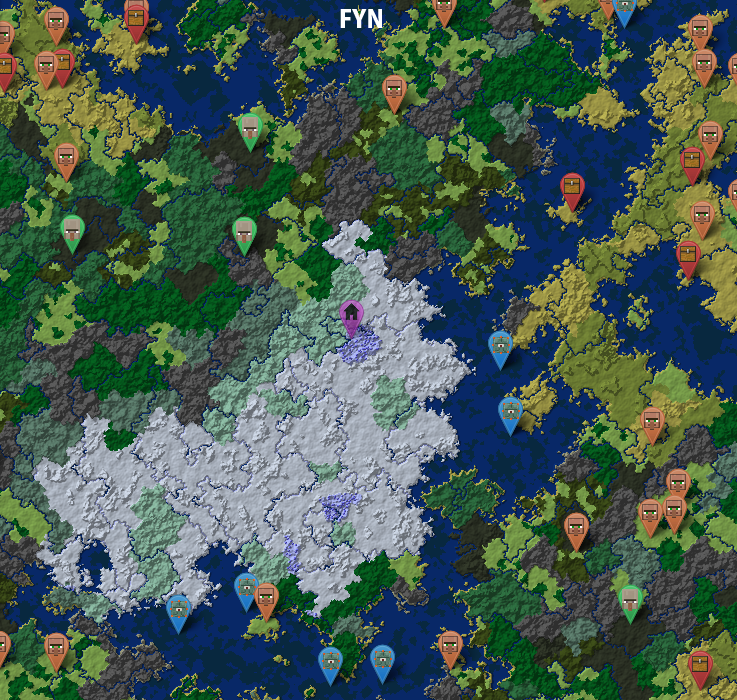

<div class="container-fluid">
  <div class="row">
  <h1> FYNCraft </h1>
    <iframe style="background-color:white;" src="https://10.0.11.13:8080/img/messages.text" width="100%" height="200px">{{Globals.isDataLoaded = true}}</iframe>
    
  </div>
</div>